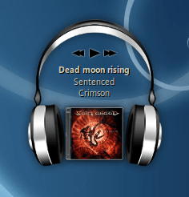
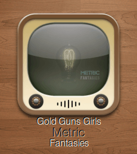

Covergloobus
Dieser Artikel wurde für die folgenden Ubuntu-Versionen getestet:
Ubuntu 16.04 Xenial Xerus
Zum Verständnis dieses Artikels sind folgende Seiten hilfreich:
CoverGloobus ist Teil des Gloobus-Projekts  und eine Anwendung, mit der auf dem Desktop das Cover des gerade gespielten Titels angezeigt wird. Die Motivation des Entwicklers war, eine Alternative zum Screenlet "NowPlaying" zu erstellen. Wahlweise kann die Minianwendung auch einen AudioPlayer ansteuern.
und eine Anwendung, mit der auf dem Desktop das Cover des gerade gespielten Titels angezeigt wird. Die Motivation des Entwicklers war, eine Alternative zum Screenlet "NowPlaying" zu erstellen. Wahlweise kann die Minianwendung auch einen AudioPlayer ansteuern.
Dies ist aber noch nicht alles, CoverGloobus beherrscht noch mehr. Auf Wunsch können die Songtexte (Lyrics) angezeigt und gespeichert werden. Um das Erscheinungsbild der Anwendung zu ändern, stehen verschiedene Designs zur Verfügung.
Die Programmsprache ist Englisch, erstellt wurde das Programm mit Python. Die beiden anderen Teile des Projekts sind die Dateivorschau Gloobus PreView und "Gloobus Coverflow" (dessen Entwicklung derzeit ruht).
Voraussetzungen¶
Um CoverGloobus transparent auf dem Desktop anzuzeigen, muss ein Composite-Manager aktiv sein.
Installation¶
 CoverGloobus ist nicht in den offiziellen Paketquellen enthalten.
CoverGloobus ist nicht in den offiziellen Paketquellen enthalten.
Fremdpaket¶
Man lädt sich ein zur eigenen Systemarchitektur passendes Fremdpaket aus dem "Personal Package Archiv" des Entwicklers herunter und installiert es manuell [1]:
32-Bit: covergloobus_1.7.3_i386.deb

64-Bit: covergloobus_1.7.3_amd64.deb
Hinweis!
Fremdpakete können das System gefährden.
Oft müssen noch fehlende Python-Bibliotheken nachinstalliert werden. Hinweise darauf, welche das genau sind, ergeben sich beim Start des Programms im Terminal. Bei Ubuntu 16.04 sind das beispielsweise folgende:
python-cairo
python-dbus
python-gobject-2
python-gtk2
python-xlib (universe)
python-xdg (ab Ubuntu 16.04 in universe)
 mit apturl
mit apturl
Paketliste zum Kopieren:
sudo apt-get install python-cairo python-dbus python-gobject-2 python-gtk2 python-xlib python-xdg
sudo aptitude install python-cairo python-dbus python-gobject-2 python-gtk2 python-xlib python-xdg
Konfiguration¶
 Nach der Installation findet man bei Ubuntu-Varianten mit einem Anwendungsmenü einen Eintrag unter "Zubehör -> CoverGloobus". Nach dem Start [2] des Programms sollte bereits ein leeres Cover auf dem Desktop erscheinen. Ein Rechtsklick (
Nach der Installation findet man bei Ubuntu-Varianten mit einem Anwendungsmenü einen Eintrag unter "Zubehör -> CoverGloobus". Nach dem Start [2] des Programms sollte bereits ein leeres Cover auf dem Desktop erscheinen. Ein Rechtsklick ( ) auf das Programmfenster bringt ein Kontextmenü zum Vorschein. Über "Configure" lassen sich Einstellungen vornehmen. Als Erstes sollte über "General" festgelegt werden, welcher AudioPlayer (oder Online-Dienst) verwendet werden soll. Unterstützt werden:
) auf das Programmfenster bringt ein Kontextmenü zum Vorschein. Über "Configure" lassen sich Einstellungen vornehmen. Als Erstes sollte über "General" festgelegt werden, welcher AudioPlayer (oder Online-Dienst) verwendet werden soll. Unterstützt werden:
 
Amarok (2.x)
MOC
(Music on Console)MPD (das Paket python-mpd wird zusätzlich benötigt)
Spotify (Online-Dienst)
Die anderen Einstellungen verteilen sich auf die Punkte:
"Interface": verschiedene Optionen wie immer im Vordergrund, Position auf dem Desktop usw.
"Theme": Design auswählen
"Cover": Quellen für Coverbilder
"Lyrics": Quellen für Songtexte
"Tablatures": Quelle für Gitarren-Griffe
Verwendung¶
Wenn nun der gewünschte Audioplayer gestartet wird und man einen Titel abspielt, zeigt das Programm das entsprechende Coverbild an (es können auch lokale Dateien wie cover.jpg im jeweiligen Ordner genutzt werden). Heruntergeladene Bilder werden im Ordner ~/.covers gespeichert. Einige Designs erlauben zusätzlich eine einfache Steuerung des Players: Wiedergabe pausieren/starten, nächster Titel, vorheriger Titel und Titel bewerten.
Designs¶
Um ein neues Design zu installieren, entpackt [3] man die heruntergeladene Archivdatei und verschiebt den entstandenen Ordner nach ~/.CoverGloobus/themes/ im Homeverzeichnis. Eine kleine Auswahl ist auf deviantART zu finden. Um das Design zu wechseln, benutzt man die Einstellungen.
Links¶
Blog
des Entwicklers
Covergloobus – Coverart, Lyrics, Guitar-Tabs am Desktop
 Blogbeitrag 03/2011
Blogbeitrag 03/2011Covergloobus Installation unter Ubuntu 11.04
Blogbeitrag 05/2011
Desklets
 Programmübersicht
Programmübersicht
- Erstellt mit Inyoka
-
 2004 – 2017 ubuntuusers.de • Einige Rechte vorbehalten
2004 – 2017 ubuntuusers.de • Einige Rechte vorbehalten
Lizenz • Kontakt • Datenschutz • Impressum • Serverstatus -
Serverhousing gespendet von